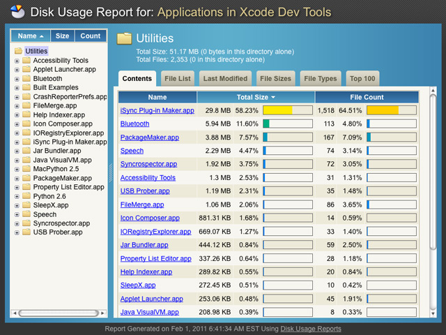
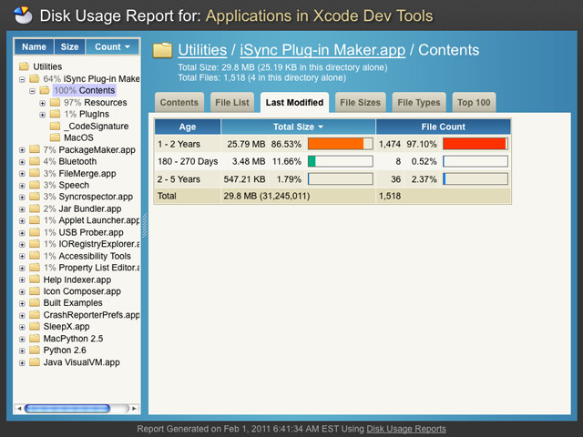

<div id="BigTag">
	<div>Even in a world of cheap storage, sometimes disk usage means a lot.</div>
	<div>Backups can take forever and unnecessarily large files can eat up bandwidth.</div>
	<div>With <b>rich web-based usage reports</b>, you (or your users) can keep things under control.</div>
</div>

<div id="FeaturesHome" class="features">
{% include topfeatures.html %}
</div>

<ul id="Thumbnails" class="thumbnails noprint">
	<li class="span4"><a href="images/screenshot1.jpg" class="thumbnail"></a></li>
	<li class="span4"><a href="images/screenshot3.jpg" class="thumbnail"></a></li>
	<li class="span4"><a href="images/screenshot4.jpg" class="thumbnail"></a></li>
</ul>
